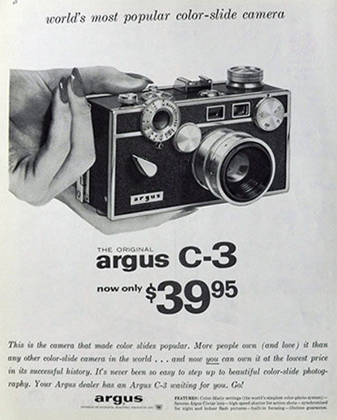
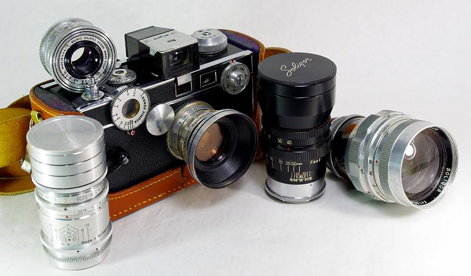

Whats important about argus
Argus cameras played a crucial role in democratizing photography in the 20th century, making high-quality image-making accessible to millions of Americans for the first time. Introduced during the Great Depression, the original Argus A and its successor, the Argus C3, were among the first affordable 35mm cameras in the United States, offering reliability and sharp optics at a fraction of the cost of European models. This affordability allowed everyday people—not just professionals—to document their lives, families, and histories. Argus cameras also found use in education, journalism, and even military service, with their rugged build and ease of use making them ideal tools in varied environments. By putting cameras in the hands of students, soldiers, artists, and future presidents, Argus helped cultivate a culture of visual storytelling and laid the groundwork for photography as a mainstream form of expression in America.
 